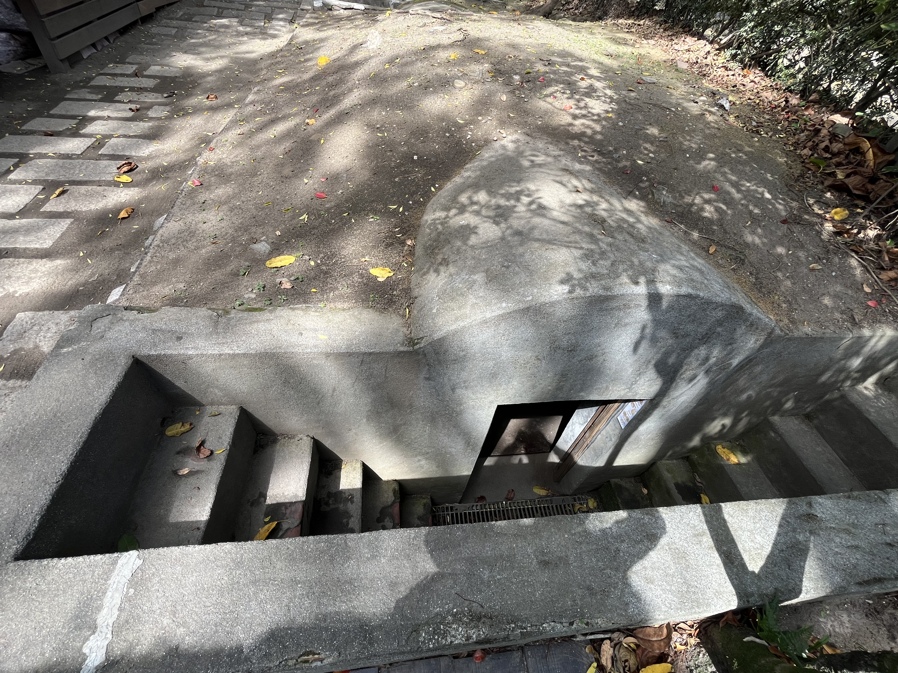
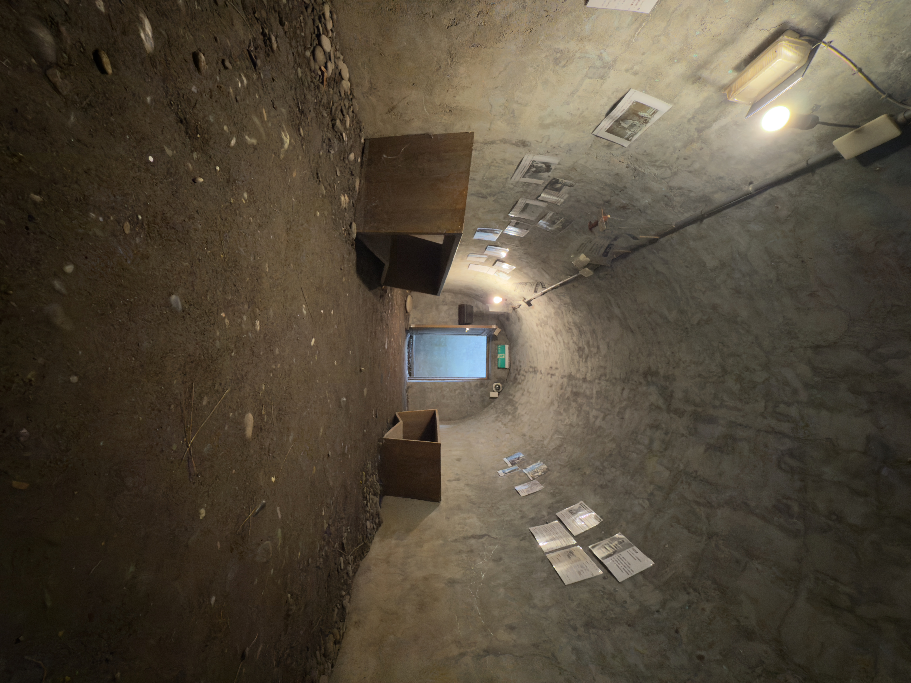

時空の防空壕：地下避難所の記録
この地下防空壕は1942年から1943年にかけて建設されました。松園別館の歴史の中で最も暗く、最も重々しい戦時の証人です。

ステップ 1
地下壕の入り口
重厚な人造石の階段が下へと続いています。ここは、アメリカ軍の激しい爆撃に直面した際、当時の軍上層部のための最も中核的な避難および指揮空間でした。

ステップ 2
観測トンネル内部
内部には、まだらなレンガの壁や厚さ4センチメートルにもなる防爆鉄の扉の跡が残っています。空気中には重々しい戦時の雰囲気が漂っています。

ステップ 3
台湾特攻隊の記録：白い蝶の悲壮な別れ
太平洋戦争末期の台湾では、特攻隊員は「白い蝶」と呼ばれていました。この記録は1944年1月15日に始まり、1945年6月7日まで続き、台湾全土で3461機が出撃しました。

ステップ 4
神風特攻隊の誕生
西暦1944年、日本がミッドウェー海戦で敗北した後、大西瀧治郎中将は「一機で一艦と交換する」という狂気的な構想を提案しました。
🔍 バーチャルツアーのコンテンツは爵攝數位影像工作室（JP Image Studio）が制作しました